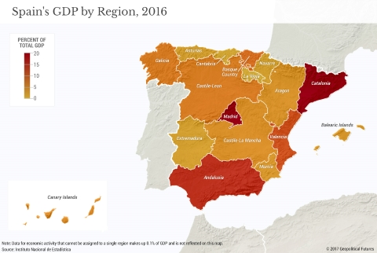

Welcome to your guide to Spain's Economy
Spain has a mixed capitalistic economy. Considered to be the 39th freest economy. Spain is ranked #24 out of 45 in the European region in terms of government integrity. Since its return to democracy. Spain has become Europe’s 5th largest economy with it being the 14th biggest largest in terms of nominal GDP.

- Spain’s largest city is by far its capital, Madrid. The center of the national government, transportation hub of the country and the home to the famous football club Real Madrid.
- Barcelona is a close second with a very large industrial region
- Spain is the second biggest foreign investor in Latin America
- Spain has the crown for the most motorways by KM in Europe, A major advantage to manufacturing industries that need to transport product.
- Spain has a diverse economy with the majority of their GDP being contributed by its:
- Manufacturing industry
- Spain has a large steel and iron industry. Spain is 17th largest producer in the world and the 8th largest producer in Europe
- Spain is a large automobile producer. Spain is the 8th largest autombile producer in the world and the 2nd in Europe right behind Germany.
- Navantia is a state owned shipbuilding firm. Spain currently has the 9th largest shipbuilder in the world and the 5th largest in Europe.
- The chemicals industry in Spain is the 2nd largest exporter in the Spanish economy behind its automotive industry
- Textiles and footwear
- Financial Services
- Banco Santander , is a Spanish multinational fianancial services company. It is the 16th largest banking institution in the world.